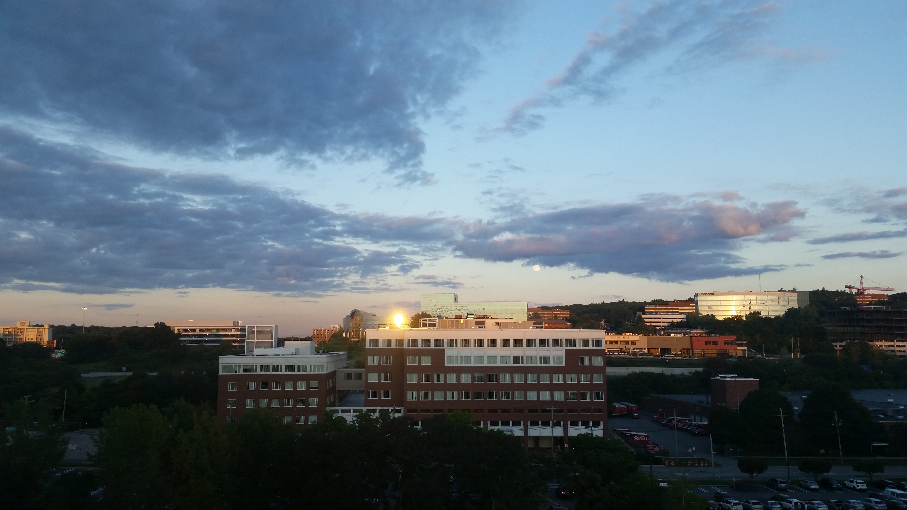
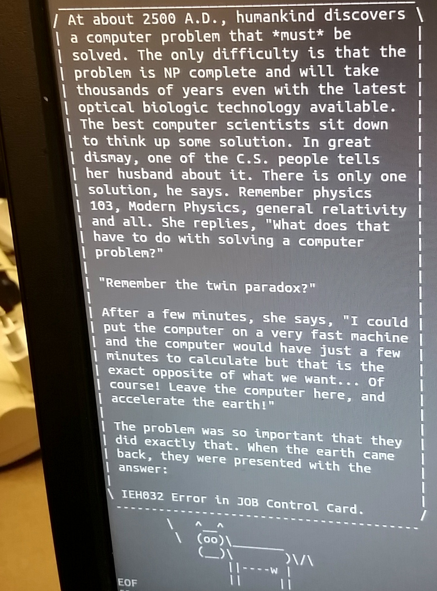
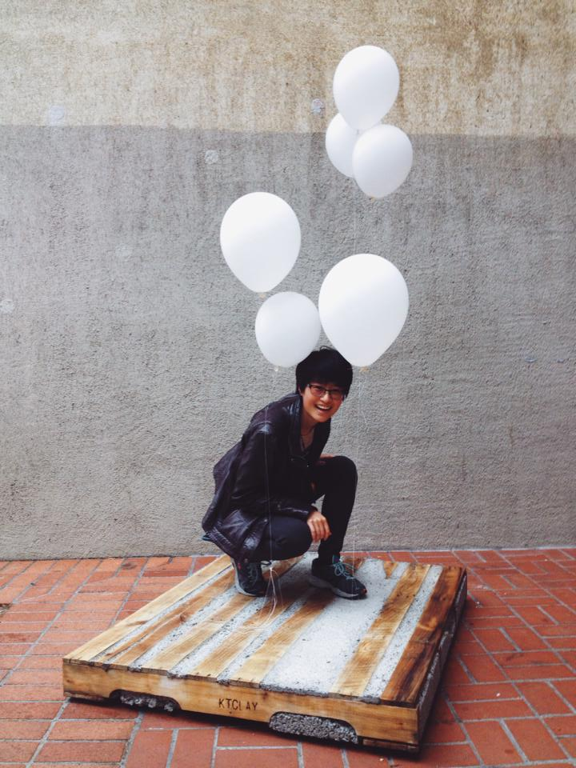

Hello! Welcome to the third iteration of my website.
Do let me know if you see any issues with the website, and I'll fix it as soon as I can.

My name is Mina Li.
Although born in California, I grew up in Massachusetts, and graduated from Lexington High School in June 2012.
Circumstances being as they were, I went back to California for my undergrad, and graduated from the University of California, Berkeley in May 2015 with a BA in Computer Science.
I now work as a Software Engineer at Adobe, as part of the TubeMogul acquisition.
For more details about my professional or my personal life, please continue through the site.

In the last few years, I've done work ranging from search engine optimization to front-end development to bioinformatics to game-making to information security. Currently, I work in the video advertising industry at Adobe in the Ad Systems team.
As far as languages I know, I have spent the most time using Java and Python, but am happy to pick up languages as I go. (Please see my resume for a full listing of languages.)
I like my work to be exciting - I want to be learning every day and working with people who love what they do. I'll happily work independently on projects, but I find a lot of value working on projects with others, too, as it gives me the opportunity to learn more from those people.
UC Berkeley - Coursework
Resume - Web Version or PDF
LinkedIn - Mina Li
GitHub - LiMina
Unfortunately, most of my repositories are private because they have been for either school or work purposes, but you can see this website on there.
If you're interested in projects I've done, take a look at the web version of my resume.
Email - minali@adobe.com
Phone - 781-771-5366

Having grown up in Massachusetts, one would think that I'd be more used to the cold, but as it turns out, I love the weather in California and think it suits me better. I have a hard time handling the cold when I go back to see my parents around the winter holiday season! However, I do miss the seasons, and the vibrancy of autumn's colorful leaves that are somewhat lacking on the west coast.
My brother, Justin, who is six years younger than I am, is still in Massachusetts attending high school. We're both unfortunately afflicted with the misfortune of being allergic to most (if not all) fluffy animals. He made an app! (Check it out here.)
I live with my boyfriend (Josh), two geckos (Basil and Sage), and a baby snake (Cinnamon). In my free time, I like to take classes on edX and read books (I have a lot of books on my to-read list)! I also like to cook and try new foods, which generally results in my taking a lot of pictures of food.
Although it's considered old-fashioned at this point, I truly enjoy writing hand-written letters to my long-distance friends, taking the time to send it via "snail mail", and I maintain a few such correspondences with good friends. I maintain regular phone calls and Skype calls with others.
English - Native speaker.
Mandarin - Grew up speaking it in the household. Conversational/working proficiency for speaking/comprehending; reading/writing still needs work.
Spanish - Started learning at age 8. Conversational proficiency.
Taiwanese - Conversational comprension; unfortunately, I can't speak it.